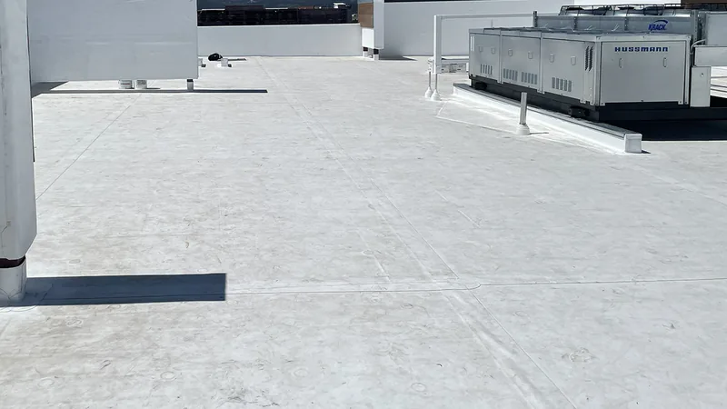
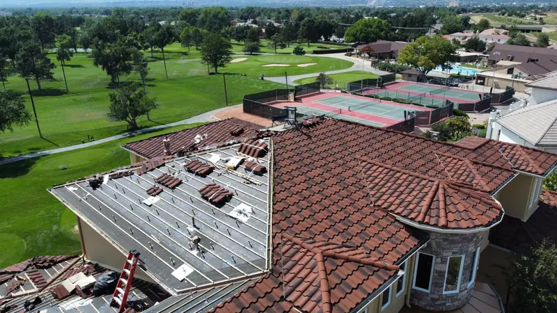

An architectural asphalt shingle roof is good for about 30 years on the life expectancy chart published by InterNACHI, the home inspectors' association. The same chart gives metal 40 to 80 years and slate 60 to 150. Those are estimates, and the chart says plainly that it's a general guideline. How long your own roof lasts depends on how it went on, how the attic under it breathes and what the weather does to it.
Below are the published numbers for each kind of roof, why two respected sources can disagree by a decade, and a better way to compare prices than the number on the contract.
The published numbers, side by side
These are InterNACHI's figures, in years.
| Roof type | Estimated life in years | Where it's used |
|---|---|---|
| Asphalt, 3-tab | 20 | Sloped roofs on houses |
| Asphalt, architectural | 30 | Sloped roofs on houses |
| Metal | 40 to 80 | Houses, cabins, barns and commercial buildings |
| EPDM rubber | 15 to 25 | Flat and low-slope roofs |
| TPO | 7 to 20 | Flat and low-slope roofs |
| Modified bitumen | 20 | Flat and low-slope roofs |
| Clay or concrete tile | 100 or more | Sloped roofs built to carry the weight |
| Slate | 60 to 150 | Sloped roofs, often on older houses |
Now look at a second source. On its FAQ page, the Metal Roofing Alliance, a metal industry group, puts the average asphalt roof at 12 to 20 years and tells you to count on 30 to 50 years or more from metal. That's a different answer for the same shingle, and each source has its own reasons for the number it picked.
So read any single lifespan figure, including the ones in that table, as the middle of a wide range.
What wears a roof out around here
East Tennessee summers are hot and sticky, and the trees that make the neighborhoods pretty also drop limbs and hold shade on the roof. A few things decide whether a roof lands at the short end of its range or the long one.
- Attic heat. A poorly vented attic bakes shingles from underneath while the sun works on them from above.
- Shade and damp. North-facing slopes under trees stay wet longer, and moss and algae like that.
- Storms. Hail or a straight-line wind can finish a roof in one afternoon, whatever its age.
- The install itself. Nails in the wrong place, skimpy flashing or missing ventilation shorten the life of even a top-line shingle.
None of those show up on a lifespan chart, and all of them matter more than the brand name.
Asphalt shingles
Asphalt shingles cost less up front than metal, by the Metal Roofing Alliance's own math, and they're simple to repair. The heavier architectural shingle gets about ten more years on InterNACHI's chart than the flat 3-tab. If you're choosing between the two, architectural or 3-tab shingles goes through the differences.

Metal
Metal is the long-life option on a house. The Metal Roofing Alliance says to expect a metal roof to cost roughly two to three times what an asphalt roof costs up front, and to last a lot longer. Standing-seam panels with hidden fasteners and screw-down panels with exposed fasteners age differently, so ask which one you're being quoted. Our metal roofing page covers both, and metal roof or shingles weighs them against each other for an East Tennessee house.
TPO and EPDM on low-slope roofs
Flat and low-slope roofs live a different life. Water sits on them longer, so the seams and the drainage do most of the work. Look at how wide the ranges are: 7 to 20 years for TPO and 15 to 25 for EPDM. A low-slope roof that drains well and gets its seams checked can live near the top of that range. One with standing puddles after every rain usually won't.
You'll find these on commercial buildings, churches, porches and the flat section over a home addition. Our commercial roofing page goes into the membranes we work with.

Tile and slate
Tile and slate sit at the top of the chart. Both are heavy, and the framing has to be built to carry them, so you can't simply swap them in for shingles on most houses. The tiles and slates themselves can outlast the underlayment and flashing beneath them, and those still need looking after over the years.

Cost per year of life
The price on the contract tells you what you'll pay this year. Dividing it by the years you can expect out of the roof tells you what you're really paying for. Most asphalt replacements on Knoxville-area homes run $15,000 to $30,000. Spread over InterNACHI's 30 years for an architectural shingle, that's about $500 to $1,000 a year.
| Roof type | Up-front cost | Estimated life | Cost per year of life |
|---|---|---|---|
| Architectural asphalt | $15,000 to $30,000 on most area homes | About 30 years | About $500 to $1,000 |
| Metal | Two to three times asphalt, per the Metal Roofing Alliance | 40 to 80 years | Can come out lower than asphalt, if you stay long enough to use the extra years |
| TPO or EPDM | Depends on the building; get a quote | 7 to 25 years | Depends heavily on drainage and seams |
| Tile or slate | Get a quote; the framing may need work first | 60 years and up | Longer life than anything else on the list |
Our opinion: cost per year only counts for the years you'll own the house. If you expect to sell in five years, a sound asphalt roof done well is usually the better buy. If this is the house you plan to stay in, the longer-lived roof deserves a real look.
Questions
Does the warranty tell me how long my roof will last?
Not really. A shingle warranty is the maker's promise about defects in the product, on the maker's terms. It can't tell you how the weather, your attic and the install will treat the roof.
Can I make my roof last longer?
Keep the gutters clear, keep the attic vented and get the roof looked at after a big storm. A free roof inspection is a good place to start.
My roof is near the end of its range. Do I have to replace it?
Not on age alone. A roof past its expected life that has no leaks, no bare spots and a solid deck can keep going. When it's time, our roof replacement page explains how it works.